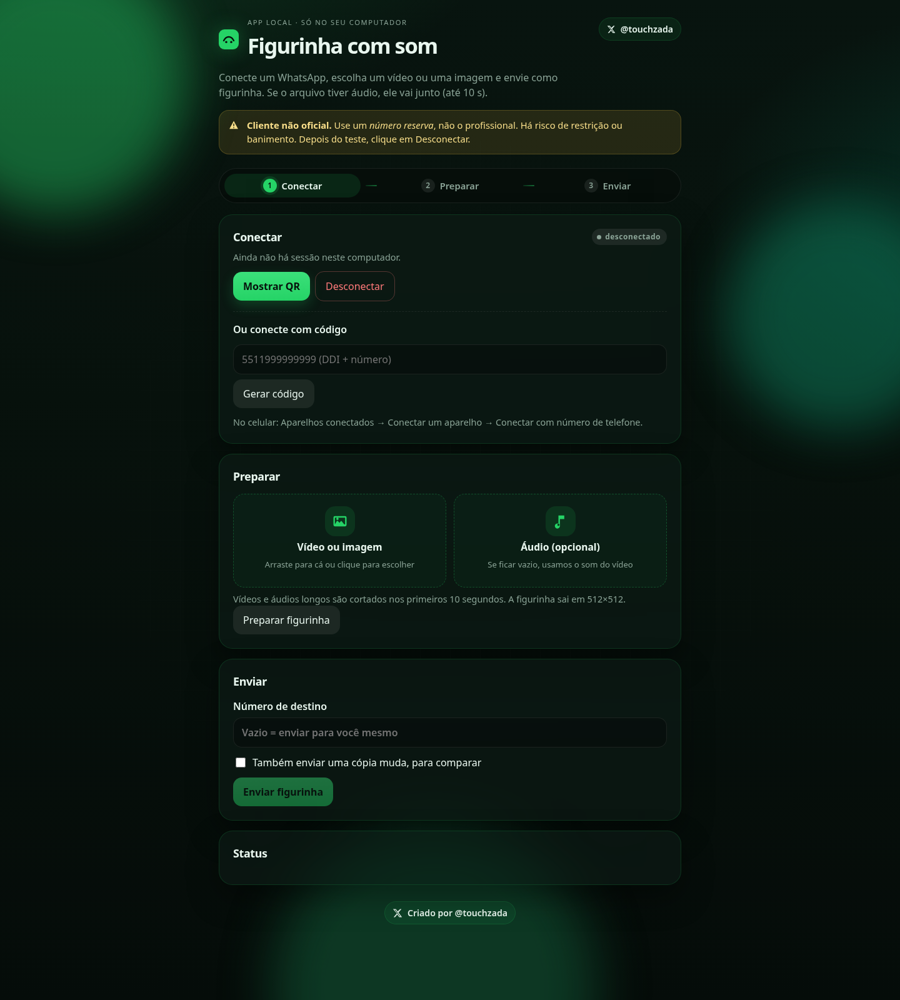

ConectarConnect
Mostre o QR ou gere um código de emparelhamento. A sessão fica só neste computador, na pasta auth/.Show a QR code or generate a pairing code. The session stays on this computer, in the auth/ folder.
SoundSticker
Transforme um vídeo em figurinha animada com áudio e envie pelo WhatsApp. A conversão acontece no seu computador: WebP 512×512 e OGG Opus, com até 10 segundos. Turn a video into an animated sticker with audio and send it on WhatsApp. Conversion happens on your computer: 512×512 WebP and OGG Opus, up to 10 seconds.

Como funcionaHow it works
Três passos, sem servidor na nuvem. O WhatsApp só entra na hora de conectar e de enviar. Three steps, and no cloud server. WhatsApp is only involved when you connect and when you send.
Mostre o QR ou gere um código de emparelhamento. A sessão fica só neste computador, na pasta auth/.Show a QR code or generate a pairing code. The session stays on this computer, in the auth/ folder.
Escolha um vídeo ou uma imagem. O app gera a figurinha em 512×512 e o áudio em OGG Opus. Se o vídeo não tiver som, anexe um áudio.Pick a video or an image. The app builds a 512×512 sticker and OGG Opus audio. If the video has no sound, attach an audio file.
Ouça a prévia e envie para você mesmo ou para outro número. Se quiser comparar, mande também uma cópia muda.Play the preview, then send it to yourself or to another number. To compare, you can also send a silent copy.
O som vai no campo stickerMessage.audioMessage. Não é um áudio comum e não é uma figurinha muda.
The sound is embedded in stickerMessage.audioMessage. It is not a regular voice note, and it is not a silent sticker.
InterfaceInterface
Tema escuro, verde do WhatsApp e cards de vidro. Clique numa captura para ver inteira. Dark theme, WhatsApp green, and glass cards. Click a shot to open it full size.
Deslize para o lado.Swipe sideways.
ComeçarGet started
No Windows, o zip portátil basta. Nos outros sistemas, rode a partir do código. On Windows, the portable zip is enough. Everywhere else, run it from source.
Não precisa instalar Node nem FFmpeg.No need to install Node or FFmpeg.
Iniciar.bat.Run Iniciar.bat.
O navegador abre em http://127.0.0.1:3847. O arquivo FigurinhaComSom-Windows.zip entra em Releases quando uma versão é publicada.
The browser opens at http://127.0.0.1:3847. FigurinhaComSom-Windows.zip is attached to Releases when a version is published.
Precisa do Node.js 20 ou superior.You need Node.js 20 or newer.
npm install
npm start
Abra http://127.0.0.1:3847. Se o FFmpeg não tiver sido baixado na instalação, rode npm run setup.
Open http://127.0.0.1:3847. If FFmpeg was not downloaded with the install, run npm run setup.
DetalhesDetails
Animada até 500 KB. Estática até 100 KB. Fundo preenchido para o quadrado do WhatsApp.Animated up to 500 KB. Static up to 100 KB. Padded to the WhatsApp square.
Mono, 48 kHz, até 10 segundos. O som do vídeo entra sozinho; um áudio separado é opcional.Mono, 48 kHz, up to 10 seconds. Video audio is reused; a separate sound file is optional.
Escaneie o QR ou peça um código de emparelhamento com DDI + número.Scan the QR code, or request a pairing code with country code plus number.
Veja a figurinha e aperte Ouvir antes de mandar.See the sticker and press Play before you send it.
A pasta auth/ fica no seu computador. Desconectar apaga esses dados.The auth/ folder stays on your computer. Disconnect deletes that data.
O pacote leva Node e FFmpeg. Extraia e abra Iniciar.bat.The package bundles Node and FFmpeg. Extract it and open Iniciar.bat.
RiscoRisk
Cliente não oficial. O SoundSticker usa o plogme (um fork do Baileys) para falar com o WhatsApp Web. Isso fica fora dos termos de uso da Meta e pode levar ao banimento, à restrição ou à desconexão do número.
Unofficial client. SoundSticker uses plogme (a Baileys fork) to talk to WhatsApp Web. That sits outside Meta's terms of service and can get the number banned, restricted, or disconnected.
Use um número reserva. Não conecte a conta principal, profissional ou de negócio. A sessão fica só no seu computador; o botão Desconectar apaga esses dados. Figurinhas com som são um recurso recente, e o formato da mensagem pode mudar. Use a spare number. Do not connect your main, work, or business account. The session stays on your computer; Disconnect deletes that data. Stickers with sound are a recent feature, and the message format can change.
Sem afiliação. SoundSticker não é afiliado ao WhatsApp nem à Meta. Use por sua conta e risco. Not affiliated. SoundSticker is not affiliated with WhatsApp or Meta. Use at your own risk.
FAQ
Não. A conversão do vídeo é local. A internet só entra para conectar a sessão e para enviar a figurinha. O app precisa estar aberto nesses momentos.No. Video conversion is local. The internet is only used to link the session and to send the sticker. The app needs to stay open while you do that.
Pode. O cliente não é oficial. Use um número reserva e clique em Desconectar quando terminar.Yes. The client is unofficial. Use a spare number and click Disconnect when you are done.
Na pasta auth/, neste computador. O SoundSticker não tem servidor próprio. Desconectar apaga essa pasta.In the auth/ folder on this computer. SoundSticker has no server of its own. Disconnect deletes that folder.
WebP 512×512 (animado até 500 KB, estático até 100 KB) e áudio OGG Opus mono, 48 kHz, até 10 segundos, no campo stickerMessage.audioMessage.A 512×512 WebP (animated up to 500 KB, static up to 100 KB) and mono OGG Opus audio, 48 kHz, up to 10 seconds, in stickerMessage.audioMessage.
Sim, a partir do código, com Node.js 20 ou superior. O zip portátil é só para Windows.Yes, from source, with Node.js 20 or newer. The portable zip is Windows-only.
Não. É um projeto independente, criado por No. It is an independent project, created by @touchzada, sem afiliação com WhatsApp ou Meta., with no affiliation with WhatsApp or Meta.